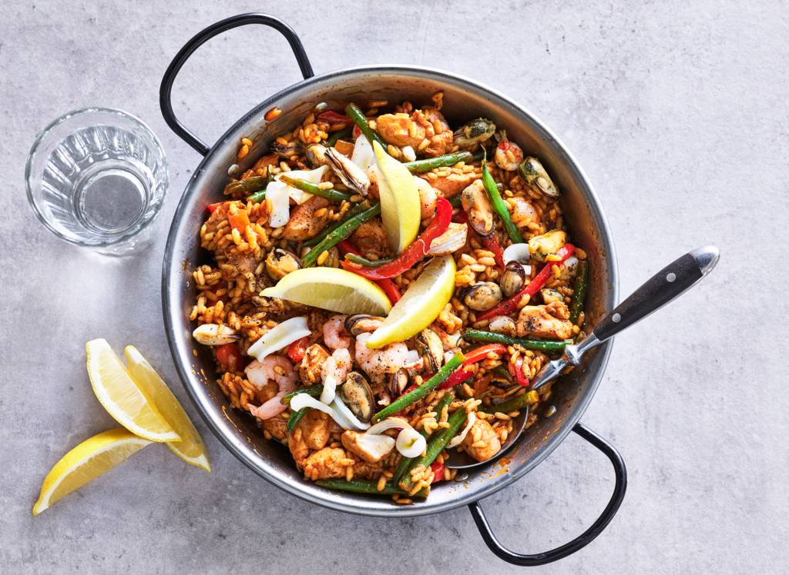

Paella

Beschrijving
Designer Paella
Njam!
Ingrediënten
- 500gr Paellarijst
- Twee blikken tomatenblokjes
- Eén blikje tomatenpuree
- Eén blik kikkererwten
- Eén kopje erwten
- Eén kopje sperziebonen
- Saffraan
- Sneufje zout
- Sneufje peper
- Citroensap
Stappen
Doe de olijfolie in een pan en bak de erwten en sperziebonen.
Voeg de blikken tomatenblokjes en het blikje tomatenpuree toe aan de pan.
Spoel de kikkererwten af en voeg deze toe
Voeg Saffraan, zout en peper toe.
Voeg de rijst toe met een beetje water zodat de rijst volledig bedekt is.
Als de rijst gekookt is gebruik deze dan om een krokant laagje te bakken in de pan.
Werk de paella af met citroensap.